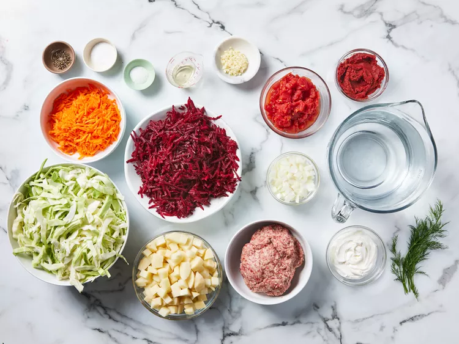

Gather all ingredients.
Crumble sausage into a skillet set over medium-high heat. Cook and stir until no longer pink. Remove from the heat and set aside.
Fill a large pot halfway with water (about 8 cups) and bring to a boil.
Add sausage to pot, cover pot, and return to a boil. Add beets and simmer for 10 minutes. Add carrots and potatoes and continue to cook until potatoes are tender, about 10 minutes more. Stir in cabbage and tomatoes.
Heat oil in a skillet over medium heat. Add onion and cook until tender. Stir in tomato paste and remaining 3/4 cup water until well blended; transfer to the pot.
Add garlic to the soup, cover, and turn off the heat. Let stand 5 minutes. Stir in sugar and season with salt and pepper.
Ladle into serving bowls. Garnish with sour cream and dill. Enjoy!